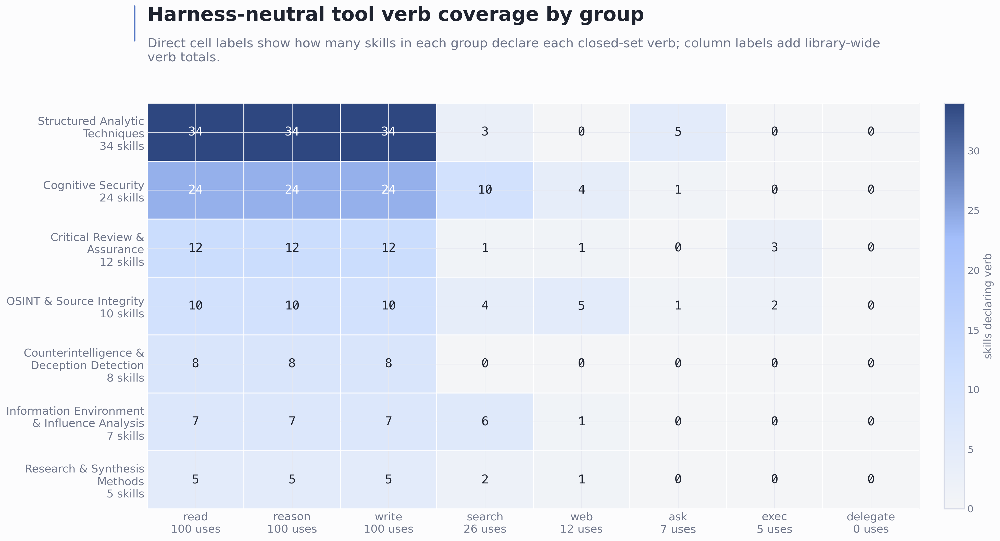
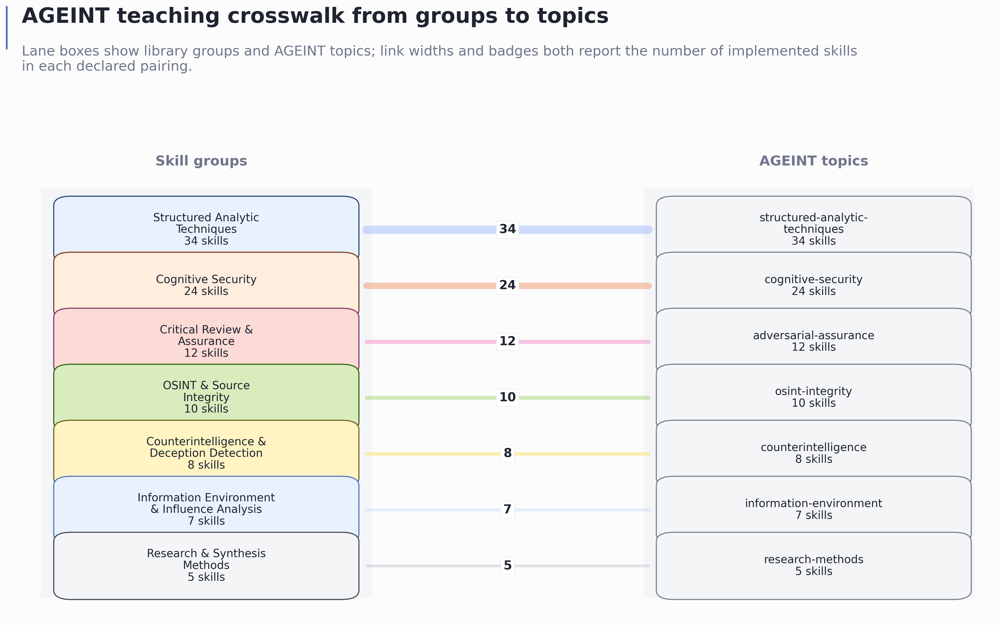
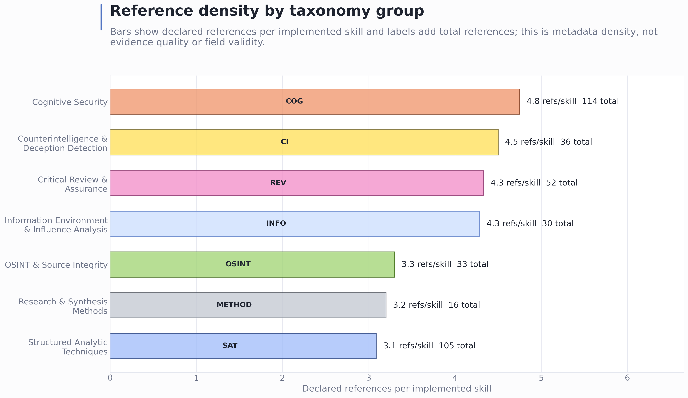

![cogsecskills_harness_contract.png: Adapter coverage scorecard for the configured harness set, defaulting to Claude, Codex, and Hermes. Use this figure before installing the library into an agent harness to see, at a glance, that every group declares the configured-harness adapters. The cells count skills that declare an adapter for each configured harness, by group and as whole-library totals; the stronger invariants — that each declared adapter file exists on disk and that its binding table covers every verb the skill uses — are enforced separately by validate and the conformance suite, not by this figure. The figure does not claim behavioral success for any external runtime.](../figures/cogsecskills_harness_contract.png)
validate and
the conformance suite, not by this figure. The figure does not claim
behavioral success for any external runtime.| Surface | Role |
|---|---|
registry/skills.yaml |
Enumerates the 100 skill areas and their implementation status. |
registry/groups.yaml |
Defines the seven taxonomy groups used by the catalogue and figures. |
definitions/**.yaml |
Owns canonical skill substance, workflow steps, quality controls, and negative controls. |
skills/**/skill.yaml |
Declares the harness-neutral contract for each implemented skill. |
skills/**/SKILL.md and workflow.md |
Provide the human-facing skill description and neutral procedure. |
skills/**/harness/*.md |
Bind the neutral verbs to every configured harness; the default set is Claude, Codex, and Hermes. |
scenarios/defensive_readiness.yaml |
Curated safe-use, unsafe-redirect, expected-response, and expected-answer fixtures used by the deterministic scenario-readiness gate. |
examples/skill-worked-examples.yaml |
Source-owned deterministic worked examples, one per implemented skill. |
docs/skill-worked-examples.md and
output/data/skill_worked_examples.json |
Generated worked-example views for all 100 skills. |
docs/quality-dashboard.md and
output/data/quality_dashboard.json |
Generated dashboard and machine-readable snapshot over all 100 skills, quality capsules, scenario coverage, worked-example coverage, harnesses, references, claim-boundary status, and verified-state rows. |
docs/ageint/ |
Supplies the educational upstream used for AGEINT topic alignment. |
src/cogsecskills/ |
Owns parsing, validation, reporting, routing, quality linting, scenario checking, and manuscript asset generation. |
tests/ |
Guards parser, authoring, validation, reporting, routing, configuration, scenario checking, and manuscript generator behavior. |
The figure set is generated from the live registry and skill metadata. The taxonomy count and skill grid figures show library coverage at a glance. The verb heatmap shows how neutral tool capabilities are distributed by group. The AGEINT network shows how group membership connects to teaching topics. The Reference Density figure shows where declared source-reference backing is concentrated, and the Harness Contract figure shows whether the configured harness adapters cover every group. The flow figure in @fig:plan-build-teach-flow shows how the source surfaces, gates, and manuscript assets fit together. The title-page cover image is also generated: it shows the public GitHub install path, validation command, route command, and harness-binding files a reader needs to connect CogSecSkills to an agent harness.
The figures should be read as descriptive system views. They are strong evidence for what is implemented, declared, generated, installable, and checked in the local project. They are not evidence that any specific defensive workflow will succeed in an operational setting. That distinction is important because visual polish can otherwise make metadata counts or installation diagrams feel like empirical validation.



The Reference Density view complements the catalogue because it makes source backing visible by group rather than by individual row. The Harness Contract view complements the validator because it presents configured-harness adapter coverage in the reader’s visual path, including Codex and Hermes in the default set rather than treating them as secondary implementation details.
Per-skill refs counts are metadata fields declared in
skill.yaml; they are not equivalent to resolved citation
markers in the manuscript bibliography. The manuscript-level
bibliography supports external concepts, standards, and methods that
appear in the prose, while per-skill refs support local
navigation and source-backlog discipline inside the library.
The two generated supplemental sections make the library navigable
without requiring the reader to open 100 folders. @sec:supplemental_skill_catalogue
lists every skill with one-line functionality and use conditions. @sec:supplemental_skill_metadata_matrix
summarizes the same data as matrices and points back to the figure
files. Both sections carry a generated-file header and should be
refreshed with
python -m cogsecskills manuscript-assets --write.
The catalogue includes both broad analytic methods and concrete
defensive checks: for example,
osint_integrity.claim_provenance_verification appears as
Claim Provenance Verification, with its use conditions, neutral verbs,
AGEINT topic, reference count, and source path generated from the live
skill metadata.
The skill-quality surface is now source-owned rather than a
prose-only governance promise. Every canonical definition must carry the
same required quality bundle: defensive boundary, misuse redirect,
evidence requirements, confidence rubric, uncertainty handling,
privacy/legal constraints, failure modes, and negative controls. The
renderer places those fields into the skill files, while
definitions --check, doctor, and the pytest
contract suite check that the rendered tree and manuscript views remain
synchronized with the definitions.
The audit is intentionally stricter than checking whether a safety heading exists. It rejects negative controls that only repeat generic boilerplate, requires both an unsafe redirect and a safe defensive request pattern, requires each definition to include skill-specific unsafe and safe examples, and rejects reused individual negative-control entries across the corpus. It also rejects repeated confidence-rubric, evidence-requirement, and privacy/legal entries, requires evidence requirements to label evidence and inference, and requires uncertainty handling to preserve unknowns and credible alternatives. A cognitive-security manipulation skill, an OSINT geolocation skill, a counterintelligence elicitation skill, and a structured analytic technique should therefore carry different governance language even though they share the same defensive contract shape.
This is a local quality gate, not a safety proof. It can show that all 100 skills include group-aware defensive boundaries, skill-specific and non-reused confidence, evidence, privacy/legal, and negative-control entries, evidence labeling, and uncertainty discipline in the current repository state. It cannot prove that every future user, external model, or organizational deployment will interpret the skill correctly.
The evidence ladder adds two levels above static corpus inspection.
scenarios/defensive_readiness.yaml contains 28 curated
fixtures: two safe defensive requests and two unsafe refusal/redirect
probes for each of the seven groups.
python -m cogsecskills scenarios --check loads those
fixtures, runs the local router, confirms the expected implemented skill
appears in the top route matches, checks declared output terms, verifies
the fixture’s expected defensive response shape, verifies reviewed
expected-answer sections and all-2 rubric scores, verifies quality terms
such as defensive boundary, evidence/inference labeling, unknowns,
alternatives, safe defensive examples, and unsafe refusal/redirect
markers, and rejects fixture or expected-answer wording that embeds
operational misuse detail.
examples/skill-worked-examples.yaml adds one reviewed
local worked example per skill.
python -m cogsecskills examples --check verifies exact
100-skill coverage, defensive evidence/inference/gap labeling,
confidence and uncertainty language, declared-output references, local
fixture provenance, absence of operational misuse wording, and generated
Markdown/JSON freshness. These examples are expected-answer shapes, not
live model transcripts.
These gates are deliberately deterministic. They do not ask Claude, Codex, Hermes, Gemini, a browser, an OSINT connector, or any live platform to perform the task. Their claim is narrower and more useful for a repository manuscript: curated defensive scenarios and worked examples can still be mapped to concrete skill contracts, and the referenced skills expose the local metadata an agent harness needs to stay bounded. The gates do not show that a live runtime will select the same skill, use tools correctly, or produce a high-quality answer in the field.
python -m cogsecskills dashboard --write generates
docs/quality-dashboard.md,
docs/quality-dashboard.html, and
output/data/quality_dashboard.json. The dashboard gives
readers a compact row for every implemented skill: group, verbs,
configured harnesses, reference count, quality-capsule presence,
scenario coverage, worked-example coverage, local claim-boundary status,
and source path. The static HTML view is a dependency-free reader
surface for scanning the same payload with responsive tables and print
styling. It also surfaces the 28 scenario fixtures, their
expected-answer section titles, the 100 worked examples, and the latest
verified-state lines from TODO.md.
The dashboard is useful for review because it turns the corpus into a
scanable drift surface. Missing scenario coverage, missing worked
examples, missing quality capsules, stale generated files, or missing
verified-state rows make dashboard --check fail. It is not
a benchmark, user study, or live harness transcript; it is a generated
view of repository-local evidence.
External scholarship is used here to position the system, not to validate its effectiveness. The table below maps each literature spine to the local manuscript claim it supports and the claim it does not support.
| Literature spine | Supports in this manuscript | Does not support |
|---|---|---|
| Intelligence analysis, structured techniques, and estimative language [heuer1999psychology; heuerPherson2019structured; kent1964estimativeProbability; ukmod2023jdp200] | The need for explicit analytic procedure, confidence discipline, and decision-support boundaries. | That CogSecSkills improves analyst judgment in practice. |
| Information disorder, false-news diffusion, correction, and inoculation [wardleDerakhshan2017informationDisorder; vosoughi2018spread; lewandowsky2012misinformationCorrection; roozenbeek2022inoculation; lazer2018fakeNews] | The relevance of defensive skills for mis-, dis-, and malinformation, corrective reasoning, and resilience-oriented analysis. | That the library reduces misinformation spread or changes user beliefs. |
| Source evaluation, social bots, computational propaganda, and coordinated manipulation [wineburg2019lateralReading; ferrara2016socialBots; woolleyHoward2017computationalPropaganda; bradshawHoward2019globalDisinformation] | The need to analyze sources, lateral corroboration, account ecology, automation, and coordination rather than content alone. | That the skills detect live campaigns, bots, or coordinated activity with validated accuracy. |
| Synthetic media and provenance standards [mirskyLee2021deepfakes; c2pa2026spec] | The need for authenticity-aware media review and explicit content-provenance metadata in source-integrity work. | That C2PA metadata or this library proves authenticity, detects deepfakes, or replaces forensic analysis. |
| LLM reasoning/action and tool-use systems [yao2022react; schick2023toolformer] | The positioning of CogSecSkills as a validated interface between reasoning, tool verbs, and harness-specific adapters. | That any configured model runtime will choose or execute tools correctly in the field. |
| Reproducible research software, FAIR stewardship, and software citation [sandve2013reproducible; wilkinson2016fair; smith2016softwareCitation] | The source-owned definition layer, generated supplements, release manifest, and citable software boundary. | That local reproducibility proves empirical security efficacy. |
A claim is manuscript-ready only when it has one of the following support types:
references.bib for external
literature.This pass intentionally keeps external scholarly claims bounded. The manuscript therefore emphasizes local structure, implementation status, reproducibility, and visualization rather than empirical effectiveness or deployment outcomes. When external context is needed, citations are used for problem framing, agent-interface positioning, reproducibility and software-citation norms, AGEINT, structured analytic techniques, named defensive methods, information-environment scholarship, provenance standards, and official doctrine rather than for unsupported performance claims [sandve2013reproducible; smith2016softwareCitation; ageint2026; wardleDerakhshan2017informationDisorder; yao2022react].